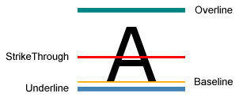
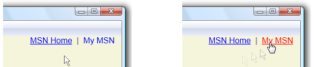

Практическое руководство. Создание оформления текста
Объект TextDecoration объект представляет визуальную орнаментацию, можно добавить в текст. There are four types of text decorations: underline, baseline, strikethrough, and overline. Пример расположения оформления текста относительно текста.

Чтобы добавить оформление текста в текст, создайте TextDecoration объекта и измените его свойства. Используйте Location свойство, чтобы указать, где отображается оформления текста, такие как подчеркивание. Используйте Pen свойство, чтобы указать внешний вид оформления текста, например сплошная заливка или цвет градиента. Если не указать значение для Pen свойство, оформление будет по умолчанию цвет текста. После определения TextDecoration объекта, добавьте ее в TextDecorations коллекции объекта нужный текст.
Пример с кисти линейного градиента и штрихового пера оформление текста.
Hyperlink Объект — это элемент содержимого потока встроенного уровня, позволяющим размещать гиперссылки в содержимом потока. По умолчанию Hyperlink использует TextDecoration объекта для отображения подчеркивания. TextDecoration объекты могут быть производительность при создании, особенно в том случае, если имеется много Hyperlink объектов. При внесении широкое использование Hyperlink элементов, может потребоваться отображать подчеркивание только при возникновении события, такие как MouseEnter событий.
В следующем примере подчеркивание ссылки «Мой MSN» является динамическим — оно появляется только при MouseEnter активируется событие.

Дополнительные сведения см. в разделе Определение того, подчеркнута ли ссылка.
Пример
В следующем примере кода подчеркивание текста использует шрифт по умолчанию.
// Use the default font values for the strikethrough text decoration.
private void SetDefaultStrikethrough()
{
// Set the underline decoration directly to the text block.
TextBlock1.TextDecorations = TextDecorations.Strikethrough;
}
<!-- Use the default font values for the strikethrough text decoration. -->
<TextBlock
TextDecorations="Strikethrough"
FontSize="36" >
The quick red fox
</TextBlock>
В следующем примере кода подчеркивание текста создается с Одноцветная кисть для пера.
// Use a Red pen for the underline text decoration.
private void SetRedUnderline()
{
// Create an underline text decoration. Default is underline.
TextDecoration myUnderline = new TextDecoration();
// Create a solid color brush pen for the text decoration.
myUnderline.Pen = new Pen(Brushes.Red, 1);
myUnderline.PenThicknessUnit = TextDecorationUnit.FontRecommended;
// Set the underline decoration to a TextDecorationCollection and add it to the text block.
TextDecorationCollection myCollection = new TextDecorationCollection();
myCollection.Add(myUnderline);
TextBlock2.TextDecorations = myCollection;
}
<!-- Use a Red pen for the underline text decoration -->
<TextBlock
FontSize="36" >
jumps over
<TextBlock.TextDecorations>
<TextDecorationCollection>
<TextDecoration
PenThicknessUnit="FontRecommended">
<TextDecoration.Pen>
<Pen Brush="Red" Thickness="1" />
</TextDecoration.Pen>
</TextDecoration>
</TextDecorationCollection>
</TextBlock.TextDecorations>
</TextBlock>
В следующем примере кода подчеркивание текста создается с помощью кисти линейного градиента для пунктирного пера.
// Use a linear gradient pen for the underline text decoration.
private void SetLinearGradientUnderline()
{
// Create an underline text decoration. Default is underline.
TextDecoration myUnderline = new TextDecoration();
// Create a linear gradient pen for the text decoration.
Pen myPen = new Pen();
myPen.Brush = new LinearGradientBrush(Colors.Yellow, Colors.Red, new Point(0, 0.5), new Point(1, 0.5));
myPen.Brush.Opacity = 0.5;
myPen.Thickness = 1.5;
myPen.DashStyle = DashStyles.Dash;
myUnderline.Pen = myPen;
myUnderline.PenThicknessUnit = TextDecorationUnit.FontRecommended;
// Set the underline decoration to a TextDecorationCollection and add it to the text block.
TextDecorationCollection myCollection = new TextDecorationCollection();
myCollection.Add(myUnderline);
TextBlock3.TextDecorations = myCollection;
}
<!-- Use a linear gradient pen for the underline text decoration. -->
<TextBlock FontSize="36">the lazy brown dog.
<TextBlock.TextDecorations>
<TextDecorationCollection>
<TextDecoration
PenThicknessUnit="FontRecommended">
<TextDecoration.Pen>
<Pen Thickness="1.5">
<Pen.Brush>
<LinearGradientBrush Opacity="0.5"
StartPoint="0,0.5" EndPoint="1,0.5">
<LinearGradientBrush.GradientStops>
<GradientStop Color="Yellow" Offset="0" />
<GradientStop Color="Red" Offset="1" />
</LinearGradientBrush.GradientStops>
</LinearGradientBrush>
</Pen.Brush>
<Pen.DashStyle>
<DashStyle Dashes="2"/>
</Pen.DashStyle>
</Pen>
</TextDecoration.Pen>
</TextDecoration>
</TextDecorationCollection>
</TextBlock.TextDecorations>
</TextBlock>